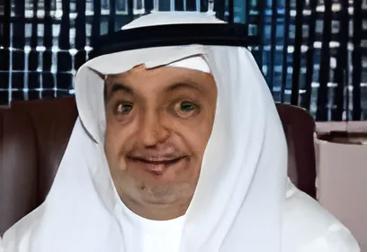

نخبة الاستشاريينتحت سقف واحد،في شارع الأمير تركي.
العظام والنساء والولادة والأطفال والأنف والأذن والحنجرة والجلدية والأسنان وغيرها، وكل عيادة يشرف عليها استشاري في تخصصها الدقيق. الدور الأول، برج تنامي، الخبر.
عياداتنا
كل عيادة يشرف عليها استشاري في تخصصها الدقيق. افتح العيادة لترى ما تعالجه، والحجز لكل العيادات على الرقم نفسه.
01عيادة العمود الفقريالكسور والانزلاق الغضروفي وانحراف العمود الفقري.
- كسور العمود الفقري الحديثة والقديمة
- كسور هشاشة العظام في الفقرات ومعالجتها بحقن مواد مثبتة للكسور بالإبر وبدون تدخل جراحي
- انحراف العمود الفقري ومعالجته جراحياً بأحدث الطرق والأجهزة
- الانزلاق الغضروفي في أي منطقة من العمود الفقري، ومنها المعالجة بالإبر بدون تدخل جراحي وتحت تخدير موضعي
- التهابات العمود الفقري ومعالجتها بالأدوية أو جراحياً
02عيادة الطب الرياضيأربطة الركبة والغضروف الهلالي وإصابات الكتف والكاحل، غالباً بالمنظار.
- الإصابات الرياضية التي تؤثر على المفاصل
- قطع الرباط الصليبي الأمامي والخلفي للركبة
- قطع وتمزق الغضروف الهلالي الداخلي والخارجي
- تمزق الأربطة الضامة في مفصل الورك
- تمزق أربطة الكتف وخلع الكتف ومعالجتها بالمنظار
- أربطة الكاحل وتفتت غضروف الكاحل بالمنظار
03عيادة احتكاك المفاصل وعلاجاتهاالركبة والحوض والكاحل: من الإبر والمناظير إلى زراعة الغضروف.
- التهابات المفاصل ومعالجتها بالأدوية
- معالجة أمراض المفاصل بالإبر الزيتية الحديثة
- معالجة تآكل المفاصل بالمناظير الحديثة
- معالجة تآكل المفاصل بزراعة الغضروف
- معالجة انحراف المفاصل وتقويتها
- تثبيت المفاصل عند الحاجة
04برنامج متابعة الحمل والولادةمن فحص الحمل حتى الولادة، ومنها الحمل عالي الخطورة.
- متابعة الحمل الطبيعي حتى الولادة الطبيعية
- متابعة الحمل عالي الخطورة مثل سكر الحمل وارتفاع ضغط الدم
- متابعة حالات القيصرية المتعددة
- متابعة النزيف والالتهابات المتكررة والمخاض المبكر مع الحمل
- معالجة ارتخاء عنق الرحم وأكياس المبايض والتليف الرحمي
- معالجة ارتخاء عضلات المهبل
05عيادة المساعدة على الإنجابتنشيط التبويض والحقن الصناعي وأطفال الأنابيب والحقن المجهري.
- معالجة الأمراض النسائية بالمناظير الرحمية والبطنية
- معالجة كسل التبويض بتنشيط التبويض
- الحقن الصناعي للمساعدة على الإنجاب
- أطفال الأنابيب والحقن المجهري
- بطانة الرحم المهاجرة
- اضطرابات الهرمونات النسائية وتنظيم الدورة الشهرية
06عيادة الأطفالالتطعيمات ومتابعة النمو والربو والحساسية وغيرها.
- متابعة المواليد والتطعيمات
- متابعة الأوزان والأطوال ومقارنتها بالمقاييس
- تشخيص ومعالجة الأمراض الوراثية
- الربو والحساسية والسكري وأمراض الدم والأمراض الاستقلابية والتشنجات
- مشاكل نقص النمو
- أمراض القلب والصدر عند الأطفال
07عيادة الأنف والأذن والحنجرةاللوزتين والجيوب الأنفية وفحص السمع وترقيع الطبلة وجراحات الأنف.
- استئصال اللوزتين واللحمية
- الكشف المبكر لضعف السمع عند الأطفال
- علاج ضعف السمع عند الكبار ووصف المعينات السمعية
- استئصال لحميات الأنف بالمناظير الضوئية
- ترقيع الطبلة والعمليات الدقيقة لتحسين السمع
- أمراض الحبال الصوتية وخاصة عند المدرسين
08عيادة الجلدية والليزرالأمراض الجلدية والبهاق والصدفية وحب الشباب وتساقط الشعر والليزر.
- معالجة الأمراض الجلدية بأحدث الطرق
- معالجة البهاق بالطرق العالمية
- التغيرات الجلدية للشيخوخة
- الليزر لإزالة الشعر والوشم
- البوتكس لشد الجلد
- اختبار حساسية الجلد
09عيادة الأسنانالحشوات والتركيبات والعدسات وعلاج العصب واللثة، للكبار والأطفال.
- الحشوات التجميلية للأسنان الأمامية والخلفية
- تركيبات البورسلين والزركونيا
- الأطقم الكاملة والجزئية
- حشوات الأسنان اللبنية
- إعادة بناء الجذور للأوتاد الداعمة
- وقاية الأسنان من التسوس
10عيادة جراحة العيون والتشطيبالماء الأبيض والماء الأزرق والقرنية المخروطية والليزك وزراعة العدسات.
- تشخيص قصور النظر وأسبابه مثل السكري وأمراض الشبكية
- معالجة الماء الأزرق
- تشخيص ومعالجة الماء الأبيض
- تصحيح النظر بالليزك وأحدث الطرق
- القرنية المخروطية
- زراعة عدسة داخل العين بدل النظارة لبعد النظر الشديد
11عيادة السكر والغدد الصماء والباطنيةالسكر والغدة الدرقية والضغط والكوليسترول بمتابعة استشاري.
- السكري
- الغدة الدرقية واضطرابات الهرمونات
- الضغط والكوليسترول
- الباطنية: أمراض الدم والصدرية والروماتيزم
12عيادة الجراحة العامة وجراحات السمنةجراحة المناظير والغدة الدرقية والثدي والفتق وجراحات السمنة.
- معالجة أمراض الغدة الدرقية جراحياً
- تشخيص أمراض الثدي واكتشافها مبكراً
- جراحة المناظير مثل المرارة والفتق
- أمراض فتحة الشرج والمستقيم مثل البواسير
- معالجة السمنة دوائياً وجراحياً بالمناظير لتصغير المعدة أو تحويل المسار
- الحالات الطارئة مثل الزائدة الدودية وانسداد الأمعاء
13عيادة الجهاز الهضمي والمناظيرالقرحة والقولون وحصوات المرارة والتهاب الكبد، بالمناظير.
- التهابات الكبد الوبائية
- قرحة المعدة والمناظير الخاصة بها
- أمراض الإثني عشر وعلاجها بالمناظير
- القولون العصبي وأمراض القولون بالمنظار
- حصوات القنوات المرارية وتصويرها واستخراجها بالمناظير
- تليف الكبد واستسقاء البطن
14عيادة الذكورة والمسالك البوليةالحصوات والبروستات والمثانة وأمراض الذكورة، بالمناظير.
- الضعف الجنسي عند الرجال
- حصوات المجاري البولية
- العيوب الخلقية في المسالك البولية عند الأطفال
- أورام الكلى والمثانة والبروستات
- تضخم البروستات
- تركيب الدعامات التعويضية للانتصاب
الأطباء
عشرون استشارياً وأخصائياً، تدربوا في كندا وألمانيا وسويسرا وبريطانيا وفي المستشفيات التخصصية في المملكة. بعضهم:
 أ.د. عبدالله العثمانProf. Abdullah Al-Othmanجراحة العظام والعمود الفقريزمالة الكلية الملكية للجراحين
أ.د. عبدالله العثمانProf. Abdullah Al-Othmanجراحة العظام والعمود الفقريزمالة الكلية الملكية للجراحين د. سليمان الموسىDr Sulaiman Al-Mousaجراحة العظام وتبديل المفاصلالبورد الكندي في جراحة العظام، زمالة الكلية الملكية بكندا للأطباء والجراحين، زمالة جراحة القدم والكاحل وتبديل المفاصل
د. سليمان الموسىDr Sulaiman Al-Mousaجراحة العظام وتبديل المفاصلالبورد الكندي في جراحة العظام، زمالة الكلية الملكية بكندا للأطباء والجراحين، زمالة جراحة القدم والكاحل وتبديل المفاصل أ.د. ليلى التلمسانيProf. Laila Al-Tilmisaniجراحة الأنف والأذن والحنجرةزمالة الكلية الملكية للجراحين (أدنبرة) للأنف والأذن والحنجرة، زمالة جامعة بيرن (سويسرا) لجراحة الأذن وزراعة القوقعة
أ.د. ليلى التلمسانيProf. Laila Al-Tilmisaniجراحة الأنف والأذن والحنجرةزمالة الكلية الملكية للجراحين (أدنبرة) للأنف والأذن والحنجرة، زمالة جامعة بيرن (سويسرا) لجراحة الأذن وزراعة القوقعة
أ.د. خالد العمرانProf. Khalid Al-Omranالأطفال وحديثي الولادة والخدجبروفيسور طب الأطفال وحديثي الولادة والخدج، زمالة الجمعية الملكية - أدنبرة د. محمد الأمينDr Mohamed Al-Aminالجلدية والتجميلدكتوراه في الجلدية والتجميل من الجزائر، دكتوراه من جامعة مونبلييه في فرنسا في الجلدية والتجميل
د. محمد الأمينDr Mohamed Al-Aminالجلدية والتجميلدكتوراه في الجلدية والتجميل من الجزائر، دكتوراه من جامعة مونبلييه في فرنسا في الجلدية والتجميل د. أسامة السلطانDr Osama Al-Sultanأمراض الدماستشاري الأمراض الباطنية وأمراض الدم، زمالة مستشفى الملك فيصل التخصصي لأمراض الدم
د. أسامة السلطانDr Osama Al-Sultanأمراض الدماستشاري الأمراض الباطنية وأمراض الدم، زمالة مستشفى الملك فيصل التخصصي لأمراض الدم د. عبدالمحسن العلقDr Abdulmohsen Al-Elqالأمراض الباطنية والسكر والغددبروفيسور الأمراض الباطنية، زمالة الكلية الملكية الأمريكية للغدد الصماء، شهادة الاتحاد العالمي لهشاشة العظام
د. عبدالمحسن العلقDr Abdulmohsen Al-Elqالأمراض الباطنية والسكر والغددبروفيسور الأمراض الباطنية، زمالة الكلية الملكية الأمريكية للغدد الصماء، شهادة الاتحاد العالمي لهشاشة العظام د. حسام الجهنيDr Hussam Al-Juhaniجراحة المخ والأعصابالزمالة الكندية في جراحة المخ والأعصاب، وزمالة جامعة ماكجيل (كندا) لقسطرة شرايين المخ
د. حسام الجهنيDr Hussam Al-Juhaniجراحة المخ والأعصابالزمالة الكندية في جراحة المخ والأعصاب، وزمالة جامعة ماكجيل (كندا) لقسطرة شرايين المخ
رسالتنا
لأن الصحة أغلى ما عند الإنسان، ولأنه إذا ألمّ به أو بقريبه مرض بذل جهداً كبيراً في البحث عن الطبيب البارع في تخصصه الدقيق، ثم بذل أضعاف ذلك من جهد ومال ووقت للحصول على موعد بعيد معه، جمعنا هنا نخبة من الأطباء والجراحين تحت منظومة واحدة، حتى يكون المريض مطمئناً وواثقاً.
وفي كل فترة ينضم إلينا أحد الاستشاريين البارعين الذين دعوناهم لمطابقتهم معاييرنا.
شهادات أطبائنا
داخل العيادات

الاستقبال
الدور الأول، برج تنامي
صالة الانتظار
مقاعد للمراجعين ومرافقيهم
غرفة الكشف
إحدى غرف العيادات
عيادة الأسنان
كرسي العلاج
فحص السمع
عيادة الأنف والأذن والحنجرة
غرفة العلاج
إحدى غرف العيادات
ممر العيادات
داخل العياداتشركات التأمين
نتعامل مع شركات التأمين التالية. وبما أن الوثائق تتغير، أخبر الاستقبال باسم شركتك وفئة بطاقتك عند الاتصال ليتأكدوا منها قبل حضورك.
- ميدغلف
- التعاونية
- بوبا العربية
- جلوب مد
- سوليدرتي
- كير كارد
- سايكو
- ACE
- الصقر
- ميدنت
- الاتحاد الخليجي
- أكسا
- الدرع العربي
- ملاذ
- التأمين العربية التعاونية (TUCI)
- سند
- نكست كير
- رويال آند صن
- العناية الشاملة السعودية
- كارز
من مراجعات جوجل
“It's my first time in the clinic, I had a warm welcome and reception served me well… Doctor was so nice and a good listener. I got the right diagnosis and medication.”
“Did my laser with Mary, she's so nice and her work is clean. I really liked her.”
موقعنا
مفتوح الآنبرج تنامي، الدور الأول، شارع الأمير تركي، الخبر
مقابل برج الفوزان وفندق ميركور.
| السبت | 8 ص – 9 م |
| الأحد | 8 ص – 9 م |
| الاثنين | 8 ص – 9 م |
| الثلاثاء | 8 ص – 9 م |
| الأربعاء | 8 ص – 9 م |
| الخميس | 8 ص – 9 م |
| الجمعة | مغلق |
info@elite-clinics.net · ص.ب 4231 الخبر 34423